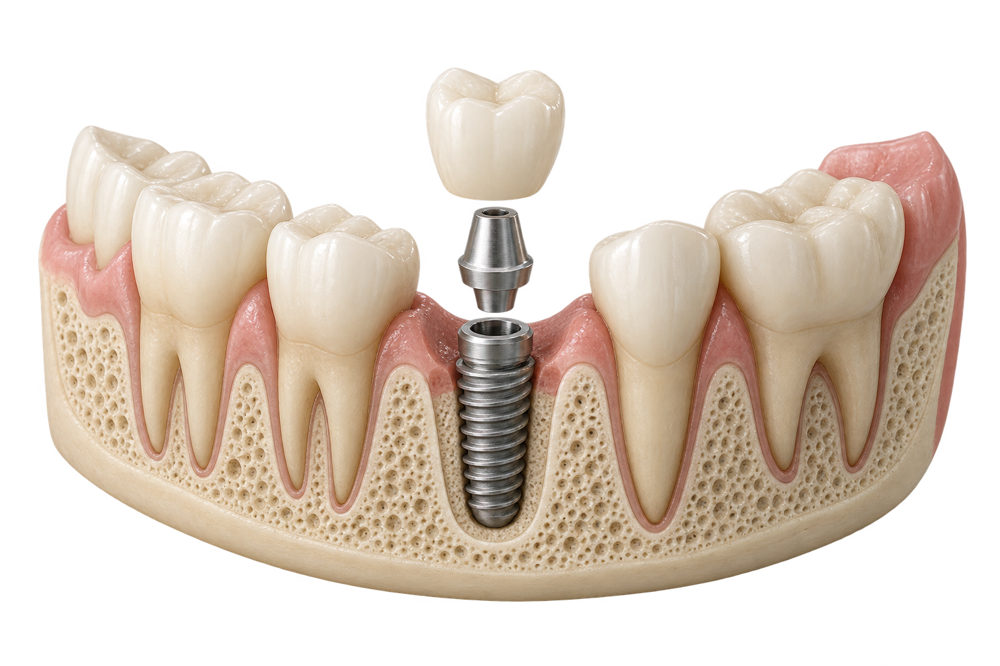
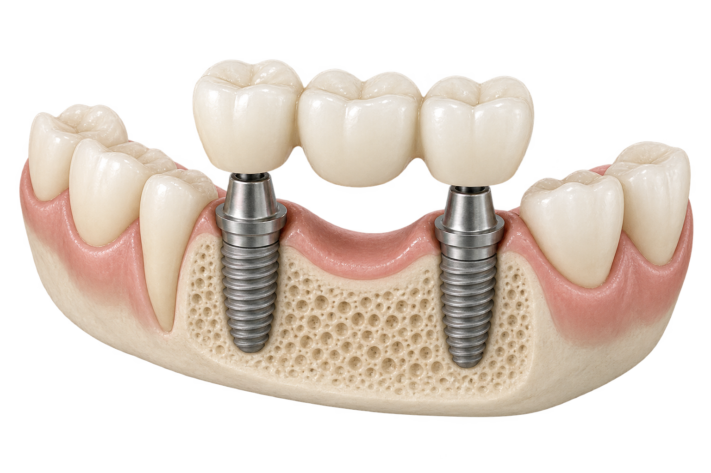
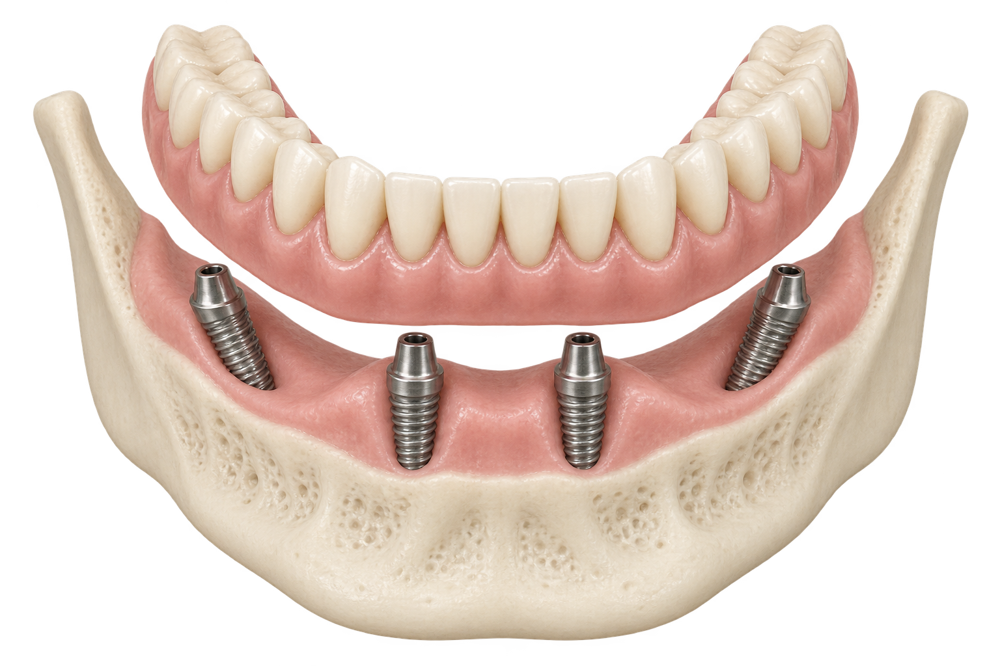

Имплант + коронка
Один зуб
от 78 500 ₽*за один зуб
Предлагаемый состав +
- Консультация и КТ
- Установка одного импланта
- Коронка на импланте
Система импланта, материал коронки и включение диагностики требуют подтверждения.
СТОИМОСТЬ ЛЕЧЕНИЯ
Показываем основные этапы и стоимость от. Индивидуальный расчёт врач подготовит после консультации и диагностики.

Имплант + коронка
за один зуб
Система импланта, материал коронки и включение диагностики требуют подтверждения.

Мост на имплантах
за единицу · уточнить состав
Общую стоимость комплекса рассчитаем по количеству имплантов и зубов в протезе.

Восстановление All-on-4
за одну челюсть · уточнить состав
Необходимо подтвердить, какой протез включён: временный, постоянный или оба.
* Предварительные цены из существующего блока. Для нескольких зубов указана цена за единицу, общая сумма комплекса пока не подтверждена. Состав выше — предложение для согласования с клиникой.
ПО ПОКАЗАНИЯМ
Удаление зубов, костная пластика, временные конструкции, седация или наркоз. Необходимость, продолжительность и стоимость врач определит в плане лечения.
Установка импланта — хирургический этап. Коронка и протезирование оплачиваются отдельно.
Стоимость зависит от выбранной системы имплантов, объёма лечения и дополнительных процедур. Индивидуальный расчёт — после консультации с врачом.
Все цены на имплантацию ↗